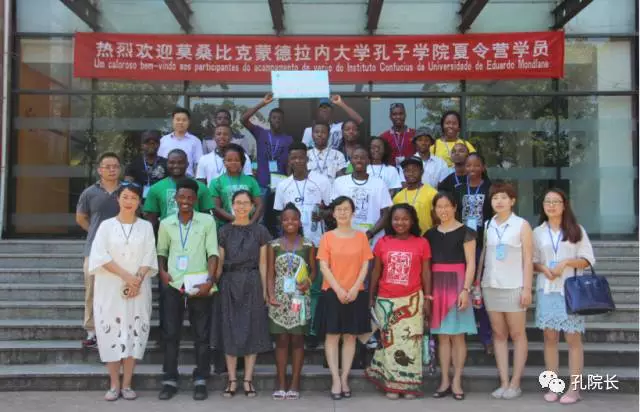
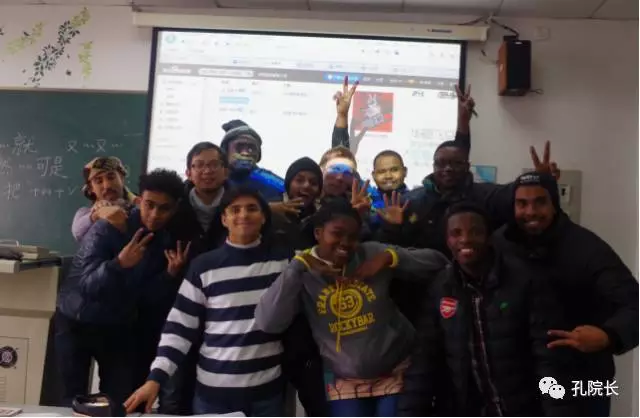
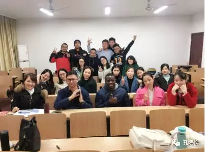
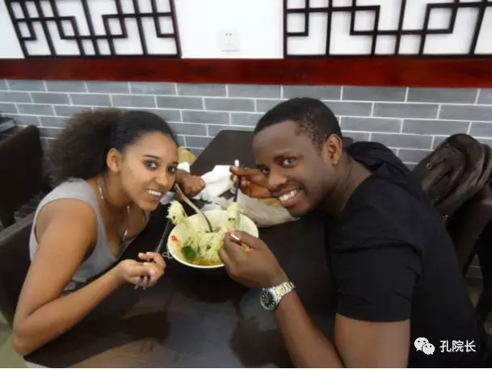
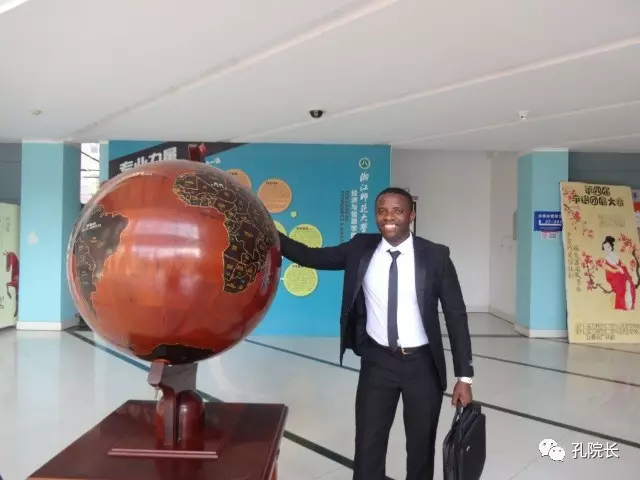

我的生命因汉语而不同
 536
536
“学而时习之，不亦说乎？”
我叫Sergio，来自莫桑比克。我跟汉语的缘分始于2012年。当时本科刚毕业的我听说我们国家最有名的学校——莫桑比克蒙德拉内大学开设了汉语班，我对此充满了好奇，就去了解了一下。没想到汉语会改变我的一生。
我曾经学过很多种方言以外的语言。葡萄牙语是我的母语，本科读法、葡翻译专业，所以葡、法两种语言是我工作的语言；此外，我还会英语、西班牙语和一点德语。但是，我就是从来没有想过会学习汉语。像我们国家很多其他孩子一样，我小时候就看过很多中国大陆的影片，也喜欢李小龙、李连杰、成龙，却从未对汉语产生过兴趣。那时对我们来说“中国人的语言”就是一个很奇怪的语言，他们写字就像在画画儿一样，根本没有人会学习这种语言。

莫桑比克夏令营（我负责翻译工作）
那年，我最好的朋友请我跟他一起去学汉语，我很干脆地对他说我不想学。“什么？”我对他说；“我不想变成一名画家”，我不想学习这个语言。争论了好几天我才被他说服。他说：“我也不是很喜欢这种语言，我们先去试试看，喜欢就读下去。不喜欢也没问题，不读就好了。”听他这么多说，我终于同意了。于是，我们俩到孔子学院报名，开始学习汉语。
没想到，第一天到了教室我就“一听钟情”，瞬间爱上了汉语。虽然老师讲的东西什么都听不懂，书上写的字，老师板书都确实像画画一样，但是我还是喜欢上了汉语。我本身就是一个很喜欢挑战的人，所以我接受了这挑战。大约过了一个星期，那位朋友有事去了德国，回来以后再也没有学习过汉语。而我，直到今天都还在学汉语，而且还即将成为一名本土汉语教师。从踏入孔子学院的那一刻起，我的一生就注定离不开汉语。
我曾经是莫桑比克第一批参加汉语课堂的学生。因为对汉语的全身心热爱，我付出了很大的努力去学习。我觉得汉语真是一种神奇奥妙的语言，我一定要把它学好。2012年，我校的孔子学院宣布该年将有三个奖学金名额，打算招莫桑比克学生来中国学习，我的第一反应是：“这是提高我的汉语的绝好机会，一定要抓住。”但因为未能及时准备好所要求的证件，那年我与来中国学习的机会失之交臂，当时我很难过。

我（前排右二）和汉语进修班的同学们
不过，那次挫折反而让我更加努力地学习汉语。终于等到了2013年奖学金名额的到来，虽然比2012年多了两个，但是竞争也增加了，所以想拿到奖学金就要参加考试。考试那天正好有我一个亲戚的婚礼。“怎么办呢？参加婚礼还是参加考试？”纠结之后，考试那天，上午我去参加了婚礼，12点钟我就离开婚礼仪式，跑到考场。考试真难啊！我在汉语课的考试中，不是第一就是第二，不是第二就是第三，但是这次考试能否通过我没法保证。后来的几天，对我来说比几年还长。老师电话打来，说我拿到当年一个学期的奖学金时，我激动得差点儿哭出来。
一来到中国，我便开始更深入地了解汉语。那时候，对我来说什么都还不能把握。与我的母语相比，两种语言是完全不一样的。我差点儿绝望了，很多次有放弃的念头，但是每当想放弃的时候就会有一句话出现在我的脑海里：“Learn Chinese，double your world”，又想到目前世界各国都与中国有着密切的交流与合作，汉语占据着很重要的地位；更何况，目前我国仍缺少会汉语的人才，所以，对我来说学习汉语是个很难得的机会，是机遇也是挑战。
我学过葡语、英语、法语、西班牙语、德语等，都没有学汉语那么让我印象深刻。为什么这么说呢？其实很简单，我已经了解的法、葡、西三种语言是从拉丁语发展过来的，德、英是由日耳曼语发展而来，而我的方言在很大程度上受到了葡、英的影响，它的结构和这些语言关系密切，所以当我学习、使用这些语言时，好像是在分析一个大的语系。可是，汉语和我所知道的语言差异很大，让我感到自己投入到了一个全新的语系，越学就越发现汉语非常难掌握。学汉语就等于挑战自己，而且在读中文的过程中，我获得了很多跟语言有关的文化知识。
我对自己的汉语水平从来不知足。2015年3月，我以226分的成绩通过了HSK5级考试，但是我觉得这个分数不够高，于是同年5月，我又一次参加了考试，获得了246分的成绩。2016年，我通过了HSK6级考试。在撰写硕士学位毕业论文的过程中，我的汉语也不断地提高。
我常常跟中国同学讨论学习上或者生活上的一些问题。同学们经常都说，我已经变成了一个“中国通”，已经养成了中国人的思维方式。我也和这些中国同学结下了深厚的友谊。刚来中国时，我认识了一个叫王璐佳的女同学，后来她成了我的辅导老师，每天晚上都和我一起在图书馆看书、帮助我准备HSK5级考试。

教中国学生葡萄牙语
2014年1月，我回家了，回到了莫桑比克，但是在我心中，汉语依然吸引着我。于是，我不断努力，取得了优异的成绩，在老师的帮助下，我终于又获得了“一学年+汉语国际教育专业硕士”的奖学金。
攻读“汉语国际教育专业硕士”专业开启了我人生新的篇章。从2015年正式进入专业学习以来，我对中国的了解有了很大程度的提高。我不仅仅对汉语感兴趣，而且对中国的文化也很感兴趣。其中给我印象最深的就是孔子的儒家思想。在学习专业过程中，我已经写过两篇关于儒家思想的作品，表明了我对孔子及其思想的看法。为了更好地了解孔子的思维，我常常读两本书，一本是《论语》，另一本就是曾仕强先生编写的《论语的生活智慧》。虽然有时候读不太懂，但是我还是获得了很多知识。
当一名优秀的汉语老师，回国后会积极努力传播汉语以及中国文化，让更多的人了解中国，这是我的梦想，是我心底所深深渴望的目标。为了实现这个梦想，我在各方面还需要进一步提高，要拼命学习新的知识，特别是教学方面，要努力为自己将来的工作打下良好的基础。
2016年参加的“江浙沪汉语国际教育硕士汉语教学技能大赛”对我有很大的触动和帮助。虽然上台时很紧张导致我表现不够出色，最终拿到了三等奖，但是评委老师提出的问题和所有建议，以及比赛结束后我导师对我的评价和指导，我都放在了心上。2015年和2016年暑假担任学校莫桑比克孔子学院夏令营班的翻译兼领队，2015年9月担任学校留学生办公室助研，2016年第二学期在金华职业技术学院担任对外汉语实习教师，在学校担任中国学生的葡语课程教师……这些都使我的教学和管理能力得到了锻炼和提高。而这些，都是因为“汉语”。
更加有意思的是，因为“汉语”，我获得了我的爱情。我的女朋友来自埃塞俄比亚，2014年9月8号，我们乘坐同一架飞机，坐在相邻的位置，目的地同是浙江师范大学。从那天开始，我们俩就谁也离不开谁。没有来中国留学，我肯定不会认识她，我和她的缘分源自我和汉语的缘分。

我的女朋友
如今，我马上就要毕业了。这是我的最后一个学期，感觉离我的梦想更近了一些。从2012年本科毕业到来中国之前，我一直在马普托一所中学教葡语，由于来中国而中断了工作。虽然我在莫桑比克时是老师，在中国也是，但是对于汉语教学，我的经验很少。回国以后，我将继续从事我的教学生涯，我也很想继续学习，追求更好的成绩。而让我觉得更加幸运的是，就在这即将毕业回国之时，我获得了参加“汉教英雄会”的机会。我非常珍惜这个来之不易的机会，在努力准备的过程中，我又一次补充了自己缺失的知识和能力。“汉教英雄会”给了我发挥所学知识和技能、充分展示自我的一个舞台，对我的汉语教学能力和全面发展将会有很大的帮助。
有很多感谢始终在我心里：感谢国家汉办，感谢蒙德拉内大学孔子学院、感谢浙江师范大学，因为在非洲开设孔子学院，给我们这些非洲年轻人良好的汉语学习平台，让我们能有机会来到中国学习并站上汉语教学的讲台；感谢浙师大国际学院的老师们，教外国人不容易。
这就是我和汉语、和汉语国际教育的故事。我的未来，将始终与我的汉语联系在一起。
作者简介

Sergio（中文名字叫赛尔）：莫桑比克蒙德拉内大学孔子学院汉语教师